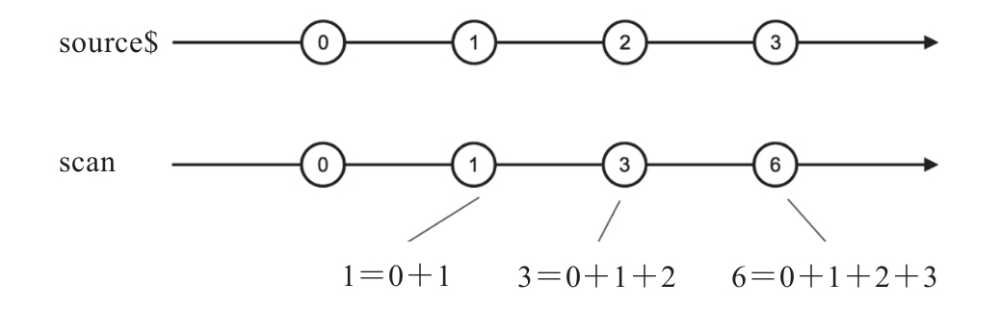

scan的参数和用法很像在第6章介绍的叫reduce的数学类操作符，也有一个规约函数参数和一个可选的seed种子参数作为规约初始值。scan和reduce的区别在于scan对上游每一个数据都会产生一个规约结果，而reduce是对上游所有数据进行规约，reduce最多只给下游传递一个数据，如果上游数据永不完结，那reduce也永远不会产生数据，而scan完全可以处理一个永不完结的上游Observable对象。
下面是使用scan的示例代码：
import {Observable} from 'rxjs/Observable';
import 'rxjs/add/observable/interval';
import 'rxjs/add/operator/scan';
const source$ = Observable.interval(100);
const result$ = source$.scan((accumulation, value) => {
return accumulation + value;
});
其中，source$间隔100毫秒产生一个数值序列，scan的规约函数参数把之前规约的值加上当前数据作为规约结果，每一次上游产生数据的时候，这个规约函数都会被调用，结果会传给下游，同时结果也会由scan保存，作为下一次调用规约函数时的accumulation参数。对应的弹珠图如图8-17所示。

图8-17 scan的弹珠图
scan可能是RxJS中对构建交互式应用程序最重要的一个操作符，因为它能够维持应用的当前状态，一方面可以根据数据流持续更新这些状态，另一方面可以持续把更新的状态传给另一个数据流用来做必要处理。
看一下你的电脑和你的手机，你能看到所有应用需要维护状态，你的代码编辑器需要维护当前打开代码文件的内容，这是应用状态，每一次按键都需要更新这个应用状态；你玩的手机游戏需要维护你扮演的英雄人物的位置和当前生命值，这也是应用状态，在游戏中各种操作和环境变化都可能影响这些应用状态；最简单的应用，比如一个计算器，也需要维持当前用户的输入和计算结果，同样也是应用状态。
可见，真正的应用不可避免地要维持状态，但是，RxJS中绝大部分的操作符都不能保存状态，无论是合并类、过滤类还是转化类操作符，它们只是数据的搬运工，数据如流水一般通过，并不会留下什么痕迹。那怎么维持状态呢？最简单的方法就是用一个全局变量来维持状态，使用RxJS的操作符来操作数据，然后数据存到这个全局变量上，但是这肯定不是一个好的办法，所以，RxJS提供了scan来解决这个问题。
scan实际上实现了一个看不见的累计值变量，每一个上游数据都会更新这个累计值，这个累计值就可以用来保存应用中的状态，有了scan，我们就不需要一个全局变量来维持应用状态，因为状态隐藏在每一次调用scan之中，一个应用中如果使用了多个scan，这些内部状态也绝对不会互相干扰。
在使用RxJS的应用中，如果需要维持应用的状态，scan是首选。在后面的章节中，我们会用实例来展示如何用scan维护应用状态。